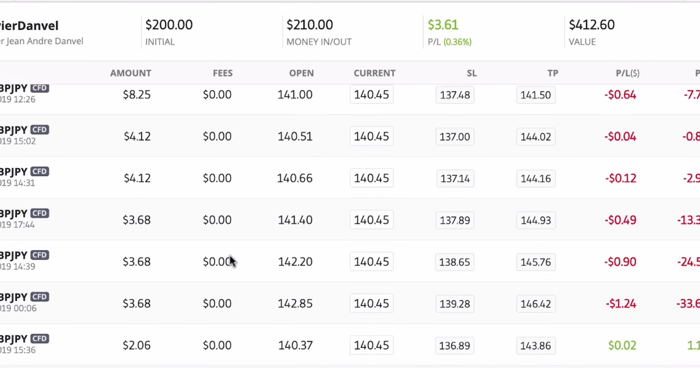
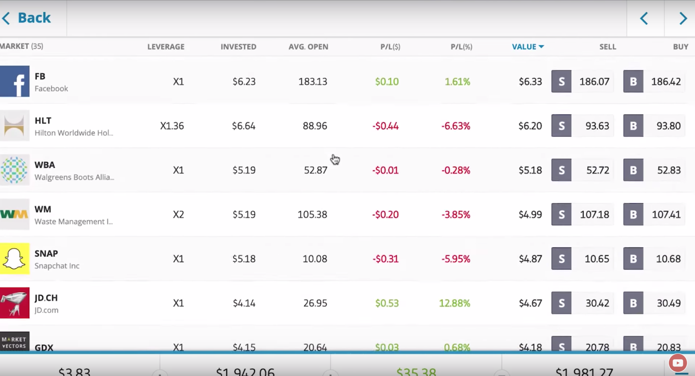
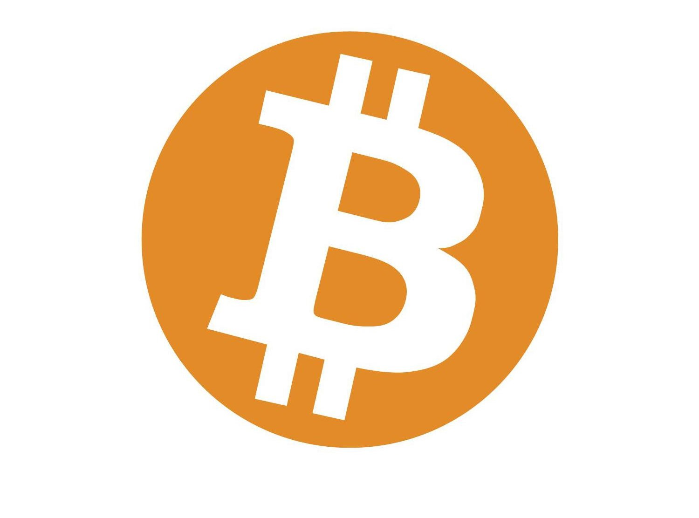

May 16, 2019 Social Trading Vlog Which trader won in last week's poll? Last week I said I was thinking about swapping one of the traders I'm copying for a new trader. I was thinking of stopping my copy of Chocowin, and starting a new copy of Harshsmith. They both trade equities (stocks and shares), but Harshsmith's risk profile is more in line with my low-risk goals.
I put a poll in my last video to see how you, the viewers were thinking. Here are the results:
"Switch Chocowin for Harshsmith?"
'Keep Both in Portfolio' : 56% 'Yes - Take Harshsmith instead' : 32% 'No - Keep Chocowin only' : 7% 'Not Sure' : 2%
I've left the video on the right there, so you can see my reasoning if you haven't watched it yet... So, what did I do?
I stopped copying Chocowin, and started copying Harshsmith. Realistically, I don't want too much exposure to equities at the moment. I'm worried about a major downturn, so limiting my exposure makes me less nervous right now. Harshsmith runs what is called a 'Long/Short' portfolio system. It means he's betting some assets will rise, and others may fall.
Long/Short Portfolio Hedging Strategy
It's a 'hedging' strategy - a way to statistically make your portfolio safer. A way to make sure that if the markets suddenly nosedive, you can still benefit from it. Or at least not lose as much money as you would if you were just 'long' (buying) everything. He's basically preparing for a major correction. As long as I know he's watching, I can relax a bit.
If you look at his portfolio, you'll notice that he uses small amounts of his overall capital on each trade. He's trading all sort of equities, and he's buying some and selling others. I asked him what his plan was, and he said that his portfolio is 'Net Short'.
This means that whilst he's both buying and selling assets, overall more of his money is in sell (Short) trades than buy (long) trades.
He also said that he's short 'High Beta' equities. 'High Beta' equities are those stocks which are traditionally more volatile than the market average. So, he's picked the ones he thinks would react most radically in a sudden downturn, and he's 'shorting' them. He's taken all of these steps to try to do two things:
1. Stabilise his portfolio in times of increased volatility.
2. Position his portfolio to make profits if the markets do correct downwards.
With clearly lower risk scores and max drawdown, I felt that switching the two traders was the prudent thing to do.
A big Thanks to Chocowin!
Even though I stopped copying Chocowin, I'd like to say a big THANK YOU to him. I closed the copy in good profit, which is a great result. He made me some really nice returns, so I just wanted to say thanks, and wish him all the best 🙂 Cheers chocowin!
How's Alnayef been trading?
Honestly, his fees are starting to worry me a bit. He's had quite a lot of trades go against him, and they're currently losing money. He hasn't closed them though. He's now got a portfolio which is almost full of open trades which are in red. The thing is that he's had them open for a very long time.
And the trades are using leverage.
Now, when you use leverage on a trade, you incurr tiny 'overnight fees' and 'weekend fees'. For every day the trade is held open, the fees get applied. They're tiny fees, but over a very long timeframe, they can start to really rack up.
That's what's happening with Alnayef. Some fees are to be expected, and alanyef has always used leverage. It's just that he's held some open for so many months now, that the fees are noticeable.
And the losing open trades don't look like they're going to turn round any time soon. I'm keeping an eye on it, as it's now a slight problem which is on my radar. We'll see.
Berrau - Low Fees and trading steadily
Berrau's been doing well. He closed that Rippple (XRP) trade in proft, and he's closed another one since. He's moving along steadily, and thankfully has also incurred extremely low fees. Nice.
Olivier Danvel
Olivier has a forex trade which has turned against him (in red) over the last few days. He appears to employing a 'cost averaging' strategy to respond to this situation.
In this case 'cost averaging' means he's continuing to buy small additional lots of the same forex pair as the price drops.
In this way, his average buy-price is getting lower and lower.
At the moment, his position is a 'buy' position. He's waiting for the forex pair to go up in value so that he can make money. Since he's brought his average buy-in price down, it's changed the price at which he'll be in profit. The overall trade will become profitable even whilst the first lots he bought are still in red.
We'll see how it turns out. I have faith in Olivier though - you don't get that many green months in a row without skill...
Harshsmith - Copy Trading has begun
The copy of Harshsmith has just opened, and there ar equities trades, some commodities trades, and some cryptos. By far the largest proportion is in equities though, as that's his main focus. I'll leave it and watch - hope it all goes well 🙂
Kela-Leo
My low risk portfolio
All of the traders I'm copying are now 'low risk' traders. All their risk scores are on the very low side. They're all underneath my target max yearly drawdown of 15%. Let's see what happens. It's a bit of a waiting game now. Low risk, and a low-volatility portfolio means that things happen more slowly and steadily. That goes for profits as well as losses... My risk score has officially gone down to 1 out of 10 this week 🙂 Nice.
I want to copy trade cryptos
Given that cryptocurrencies have been on a bit of a bull-run recently, I'm giving them some thought again. I'd love to find a good cryptos trader to copy on eToro, but I'm struggling with that.
Everyone who's trading cryptos seems to be either:
A: Very new, so I can't see a long enough amount of trading history.
B: Also trading a lot of equities (which I don't want more exposure too right now).
As a result, I've largely missed out on the recent upwards moves. It's been frustrating to be honest. I'm almost tempted to ask the people who are copying me whether they'd mind me manually HODLing some. I'm not quite there yet though. I'd still really like to find a good crypto trader, so I'm asking the viewers for suggestions.
I need someone with a proven history. Someone under my 15% max yearly drawdown, with low-end risk scores. There are those who say it's impossible in the crypto market. I don't see why... If the asset is volatile, just use smaller proportions of the portfolio. Avoid leverage. Set stop losses. Surely it's possible! We'll see what suggestions come back to me 🙂
Want to see my current eToro statistics? View my profile on eToro →